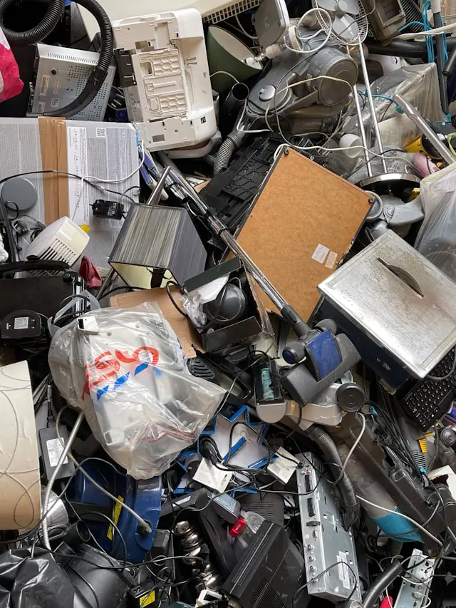

Россия достигла целевых показателей по переработке мусора в 2024 году
В 2024 году Россия успешно достигла
целевых показателей по переработке и утилизации
твердых коммунальных отходов, установленных в рамках
"мусорной реформы".

Глобальный кризис отходов: Страны борются с нарастающей проблемой мусора
В последние годы глобальный кризис отходов
стал одной из самых обсуждаемых экологических
проблем. С увеличением населения и ростом
потребления на планете наблюдается небывалый рост
количества мусора.
Океаны под угрозой: пластиковый мусор угрожает морской жизни
Пластиковый мусор стал одной из самых
серьезных угроз для океанов и их обитателей.
По оценкам ученых, ежегодно в океаны
попадает около 8 миллионов тонн пластика.
Этот мусор распадается на мелкие частицы,
которые попадают в пищевые цепи морских
обитателей, вызывая смертность и снижение популяций
многих видов.
Инновации в утилизации: как новые технологии помогают бороться с мусором
С ростом количества отходов во всем
мире растет и необходимость в инновационных
методах утилизации. Ученые и инженеры разрабатывают
новые технологии, которые помогают перерабатывать мусор
более эффективно и экологично.